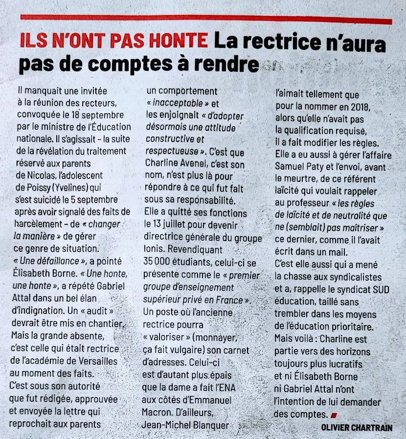

Publication d’archives
Comment est-ce possible que l'ex-rectrice de l'Académie de Versailles, qui était une proche de Macron, n'ait…
Date indiquée par Facebook · 19 septembre 2023
Texte conservé avec la publication
Comment est-ce possible que l'ex-rectrice de l'Académie de Versailles, qui était une proche de Macron, n'ait pas de compte à rendre ?
Une honte !
Article publié dans l'Humanité du 19/09/2023.

Sources
Archive rouge · export Facebook · AR-0002-FB-01583
À lire aussi · Nous appelons les citoyennes et les citoyens à être unis contre le terrorisme et à défendre ensemble l’école…